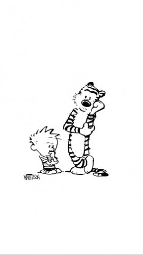

--Adyashanti
"You have your way. I have my way. As for the right way, the correct way, and the only way, it does not exist."
--Friedrich Nietzsche
Years ago a woman on social media asked how she should handle facilitating spiritual inquiry when her clients didn’t follow the rules. The post got almost a hundred replies, each commenter so eager to tell how they did things, to show off what they knew.
Finally I asked the original poster, “What are you currently doing in this situation, what has worked for you?”
Turned out she already knew exactly what to do, and she was already doing it.
Yet she deferred to everyone else’s wisdom.
Fast forward to a couple of months ago, where here at Mind-Tickler headquarters, we discussed how many seekers turn to teachers to give them answers, in satsang, on social media, in retreats and zooms and podcasts. We discussed how, by asking sages for their points of view, folks check their own wisdom at the door.
That Tickler said, in essence, ask yourself rather than hanging on every word or quoting every utterance of some wise one. Because how can surprises happen for you when you’re trying to fit your own experience into someone else’s box?
Since that Tickler, many have written me to ask, “But how? How do I ask myself?” They feel caught in the mind’s loops. Their answers don’t seem right, don’t match the gurus’, aren’t liked.
“The mind is too powerful,” they say.
Now maybe it’s true that the mind, left to itself, goes round and round the same maypole forever. Maybe it’s true that some kind of outside input is necessary in order to be able to step outside the minds’ usual hamster wheel.
Or maybe it’s not.
What is certain though, is that if answers are not found by you, they can never be yours. They’re someone else’s. All you can do is borrow them.
Perhaps part of what has gotten in the way is that you're trying to understand. You want comprehension, you want realizations, you want ahas, rather than seeing or being or experiencing. But understanding is dependent on the mind. Understanding is, by definition, intellectual.
Maybe what is needed, in order to discover different-than-usual answers, is different-than-usual questions.
So today, just for fun, here are a few possibly-new questions to play with.
Let's be clear that they’re not inquiries, not a practice, not a system, not a method, not a way.
They’re just some random questions. Maybe you’ll find them mind-opening.
Note that these questions include no whys or what’s-the-meanings or explanations of how some past trauma brought xyz to happen. That kind of rehashing affirms established conclusions rather than offering something new.
Also, consider bringing these tips as you play with these queries:
• As mentioned in that previous Tickler, be extremely literal. If you say, “There’s a sense,” - where? Where is this “sense”? Literally point to it. If it doesn’t hold up to literal, then consider the possibility it’s imagined and not actually anywhere.
• Don’t answer with theory. Theory is still someone else’s answer, pretending to be your own. That’s you trying to do things right, not an actual answer.
• Also don’t try to make theory prove preconceived beliefs. “It’s energy.” “It’s the mind.” “It’s a thought.” What does any of that mean, exactly?
• Watch for the inclination for debate with yourself, with the questions, with the answers. You don’t have to believe, you don’t have to agree, you don’t have to figure out if the answer that comes is true. If you’re going to evaluate and weigh every answer for whether you agree, it will not be possible for anything new to get past that sieve.
It doesn’t matter if you are right. You won’t be able to tell anyway.
• Watch for “buts” and “feels likes.” Both change the subject and turn your answer right back to where you started. Both are huge contributors to that sense that you’re stuck.
So in no particular order, just for novelty:
1) What if this happening, this personality style, this feeling, this thought, is not my fault or doing?
It's just a WHAT IF. Watch mind insist it’s all your your fault and responsibility. Watch it fight hard to blame and accuse you. Watch it get furious at the idea that everything, good or bad, might not revolve around all-important you.
2) Is it possible that this, as it is, is good enough? Is it possible that I, as I am, am good enough?
This isn’t asking if you like it, or if you’re where you want to be, or if you’re good, or if you’ve “got it.” This is asking, is it good enough? Can you make do with less than perfect? If not, why not? Is your self too special to be imperfect like everything else?
3) Does existence/life/awareness (whatever word works for you) have a problem with me? As I am? Feeling into it, how does life/awareness/existence feel about me, no matter how screwed up, or how terrible a person I may be? What does existence feel about me?
Are you ever going to know if your answer to this is correct? Of course not. Correctness is not what this question is for.
4) Is this all there is?
Try answering YES. Wait out the tantrum, the, “But I don’t Liiiiike it.” Stay with YES, consider that possibility, and watch what happens.
5) Is this situation important? Literally?
Not, “It’s important to me.” What’s that mean, anyway? Take you out of the equation for a minute and relook- how important is it if you’re not the center of the universe?
6) What would my answers be if “But” or “Feels like” didn’t exist?
7) How is this situation or feeling being used to define me, to tell me who or what I am?
“This means I am (insert word here)…” Does any situation actually know what you Are? What even cares what you Are? What is so intent on defining what you Are?
8) What if I’m not real even though I’m absolutely positively most definitely certain I am?
Rather than all the grand debates about whether I AM or I AM NOT, just consider the possibility that you’re not only not what you think, but that you’re not, at all. What’s that feel like? What happens? Then what? If there’s a big resistance and irritation, what benefits from that?
There are more, and these are a good start just for fun.
Will these questions take you to enlightenment? Well, I’m not sure exactly where that is, but if it means hanging out on some chaise lounge at a mystery beach somewhere, I’m in.
Will these questions get you what you want?
They’re just questions, they’re not a genie.
Do I know what you’ll find?
No.
I know what I found.
And your way will be
gloriously different.
Want to watch Judy's Buddha At The Gas Pump interview? click here
"You want your purveyors of Truth
To look and act special.
You want them different
And separate
And powerful.
You prefer to imagine them
Cloaked in light
Than sitting on the toilet.
You like them passionless, sexless, Mellow, gentle and kind.
You like the idea of miracles
And will invent them when necessary.
Your strategy is to keep them
Out there
Far away from you
Exotic and mysterious.
You revel in the myth
Of the Enlightened individual
Hoping to someday be so empowered.
What you can't tolerate
Is for them to appear
As ordinary as you."
--Ram Tzu (aka Wayne Liquorman)
“*Only if you reject all the other paths can you discover your own path.”― U.G. Krishnamurti
